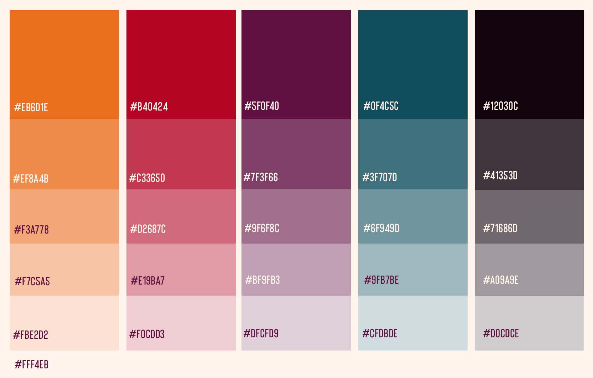

body text
By way of example, this paragraph is submitted as body text. It is complete with bolded copy, italic copy, bolded italic copy, and links. In the report, bolded copy is shown in Tyrian Purple. But, the report has no hyperlinks. On the site, differently colored text would be confusing and should only be used to indicate UI elements. While this document only gives desktop specifications, similar proportions should be maintained for other applications:
emphasis
not person first
Director/Producer - Tatiana Bacchus
Production Manager - Danielle Lewis
Production Coordinator - Jennifer Dowe
Editor - Les Rivera
Post Production Sound - Ben Wong
Archival Research Assistant - Destiny Boynton
Tatiana Bacchus, Director/Producer
Danielle Lewis, Production Manager
Jennifer Dowe, Production Coordinator
Les Rivera, Editor
Ben Wong, Post Production Sound
Destiny Boynton, Archival Research Assistant
headings
block quotes
In the last week or so, Iʼve been noodling on this fictional text on econmics which I'm outlining and a statement made by Rory Sutherland has been heavily on my mind:
At first, the model shows you things you didnʼt know. Then, end the end, it ends up convincing you of things you shouldn't believe.
He explains his meaning at length in both the lecture, The Case for Magic and his recent Opus Alchemy.
pull quotes
This is a left oriented pull quote. It should reach the left edge of the viewport.
This is a right oriented pull quote. It should reach the right edge of the viewport.
Letʼs not do centered pull quotes.
heroes
buttons
boxes
Use color tints instead of using colors at partial opacity. Seashell and Rajah should always be used at full opacity and without alteration. Tints of other colors are superior to low opacity Seashell or Rajah
